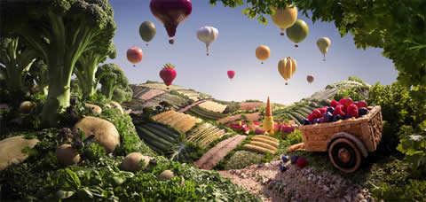
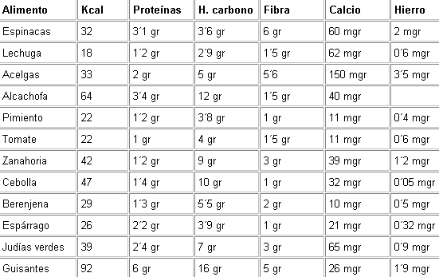

VERDURAS |
||
¿Que son las verduras y hortalizas?"Con huerta y verdura, se aleja la sepultura" |
||
|  |
Las verduras y hortalizas son, al igual que las frutas, alimentos reguladores, porque su principal aporte lo constituyen minerales, vitaminas y fibra. Son nutrientes que regulan las reacciones químicas que se producen en el organismo. Su alto contenido en fibra hace que sean eficaces en la prevención del desarrollo de cáncer de colon. Además, la suma del efecto saciante más su bajo contenido calórico les constituye en los alimentos principales de los regímenes bajos en calorias. |
|
¿De qué se componen?Tienen muy bajo aporte calórico, graso y proteico, siendo además las proteínas aportadas de bajo valor biológico. El contenido en hidratos de carbono tampoco es muy importante, a excepción de la patata. Contienen principalmente fibra, minerales (calcio y hierro) y vitaminas. En la siguiente tabla, (adaptada de la tabla 11.2, pag 117 en "Alimentación y nutrición. Manual teórico-práctico" C. Vázquez. A. Cos. C. López-Mondedeu. 1998. Ed. Diaz de Santos) podemos ver los principales componentes de algunas verduras u hortalizas de consumo frecuente. En la siguiente tabla, (adaptada de la tabla 11.2, pag 117 en "Alimentación y nutrición. Manual teórico-práctico" C. Vázquez. A. Cos. C. López-Mondedeu. 1998. Ed. Diaz de Santos) podemos ver los principales componentes de algunas verduras u hortalizas de consumo frecuente. Contenido en vitaminas: no tienen, al igual que las frutas, vitamina D. En cambio tienen cantidades apreciables de otras como vitamina A o C. En general, se puede intuir cuál es la vitamina más rica en función del color de la verdura: Amarillo, rojo àVitamina A:tomates, zanahorias, pimientos rojos, espinacas, lechuga y acelgas. Verdes àVitamina C coliflor, espinacas, perejil, acelgas, calabacines, repollo, lechuga y tomates. |
||
|  | ||